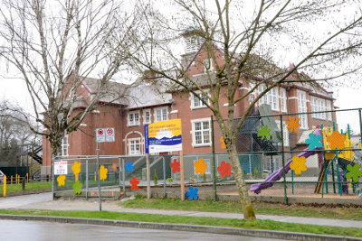
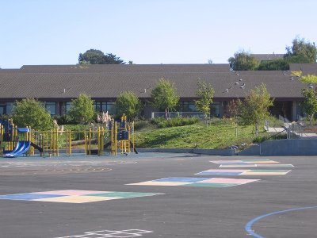
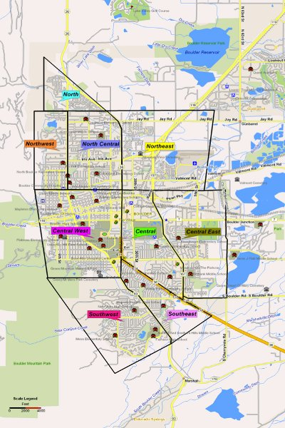

Welcome to one of the most exciting guides of the handbook, which is the
Hunting Season chapter and sub-guide.
This is also the first sub-guide of the handbook, which is both a chapter and an individual guide in the same time. Sub-guides are special chapters within ordinary guides that are too important to be
just a chapter.
Important
This chapter has been divided into 3 parts to spread the content and avoid having too much information at one page.
Use the back and next buttons at the bottom of this page to navigate within the parts.
So, what do I mean with 'Hunting Season'?
This guide will be all about leaving your home, and entering the big and wide open world, to find yourself a little friend and sex toy outdoors and in the wild.
You may choose longterm relationships with specific children, or have random fun with random children all over.
It may seem like a brutal comparison, but this is very similar to e.g. deer hunting; except for
this being kiddie hunting, your genital being your weapon, your sperm being your ammunition, sweet and delicious children being your preys, and their panties being the trophies for the mantel. And the beautiful part of this kind of hunting is that it is all about excitement and love, both for the hunter and his preys.
This way of finding children is ranked at sixth and last place because it requires a great amount of dedication, work, patience, risks and professionalism to succeed. But it still is the most exciting way to find children, while giving you the largest variety of both children and general possibilities.
I will now go through all the advantages and disadvantages, which will give you a good idea about what this is all about:
Advantages
Excitement
Hunting for children outdoors and out in the field will create a lot of excitement in your life; all the way from the preparations, to the actual hunting, and to the final point of getting a child in your arms to just love, fiddle with, or even make love to.
All human beings have a built-in excitement for hunting. This is a part of our genes and nature, inherited from our ancestors. It doesn't matter what we hunt for, whether it's food or children, or a paparazzi hunting for celebrities,
any hunt causes very exciting feelings and rushes inside us.
Though, nothing really beats kiddie hunting. Pedophilia is so darn forbidden, and the preys of such hunting will be so darn nice to finally obtain, that the level of excitement that this kind of hunting provides, outperforms
all other hunting sports.
There's nothing like hunting for something outdoors that you desire as much as a pedophile desire a child, and knowing that this can actually give you sex with not only one sweet kid, but several sweet kiddies into the indefinite future.
It can't really be explained, it has to be experienced firsthand.
Availability
Do you know how big our planet really is? Few people actually think about that; as it's sometimes easy to forget that there's more out there, beyond the borders of your own community and providence.
Our planet is super large compared to us humans. Even just a medium sized country is enormous, containing so many providences, cities, towns, communities and neighborhoods; all being filled to the brink with active children, moving all over the place, exploring and playing with excitement, curiosity, screams and laughter.
There are so many places for you to travel to, and there are so many different children available, that it's almost ridiculous. There are preys all over the place for pedophile hunters to spot, stalk and take down; without much of adult supervision.
Control
When you are outdoors and hunting for children,
you are the one being in full control; while the children, their parents and the law enforcement aren't. They won't even know what hit them when you're done with your little sweetie and prey, having become her or his first male, and is already far gone.
A quiet neighborhood, with distant sounds of dog barking and lawn mowers, a place that everyone thought was safe in their chronic nativity; some children are screaming, running around and laughing; all being unaware of you having them in your scope from a distance, like a sniper in the battlefields, just waiting to take one down with your hard and stiff weapon loaded with millions of bullets; in one way or another.
You will be the one who are preparing yourself, making plans, surveying and stalking from a distance, and finally pulls the trigger when no one expects it.
Dr. Jekyll and Mr. Hyde
By becoming a kiddie hunter, especially a remote hunter, you will be able to live two separate and very different lives:
Your family, friends and co-workers will always see your normal and respectful self, living a normal and respectful life as a legal citizen in your local area. While your alter ego will travel to various destinations and hunting for various children, even seducing and having sex with them.
These two persons can be safely separated, so you can live a normal and comfortable life at home, in the same time as being able to practice pedophilia to any extent of your choice, by traveling to distant destinations and hunting grounds.
Disadvantages
Mobility
Hunting for children outdoors requires a lot of mobility; the longer the distances, obviously the more mobility will be required. And any sort of mobility will become both challenging and risky when hunting for children outdoors.
It's usually best to either own or use a car to move around, but a car can also be easily identified by its registration plates, color and make. An alternate way of traveling will be to use public transportation, but that can also identify you through tickets, surveillance cameras and lots of witnesses, even track you back to your home area somehow.
And if anything should go wrong during a hunting session, quick and fast movements will be required to safely escape.
Thus, a great health and great resources are usually required for this method to become safe and successful.
Suspicions
When moving around in various areas as a kiddie hunter, you may be seen or get detected as a suspicious person. This may lead to various confrontations by curious or skeptical residents, even the local police; especially when interacting with children in public.
Even people at home, like your family and friends, may suspect that you're doing something questionable if they learn that you're regularly traveling without any good reasons. These suspicions are usually related to infidelities and average criminal activities; and may thus cause a private investigator to finally start following you around, hired by an e.g. jealous or concerned wife, which can end disastrously.
Suspicions may also be awakened locally if you do things to children outdoors that end up on the local news, which may cause some observant and generally smart people, who know you, to correspond your travel with that news article; especially if there are several travels that corresponds with several news articles about outdoors child molests or rapes, and/or publicized descriptions that match you well.
Dangerous
It may become dangerous practicing sex with unknown children outdoors. You may be caught red handed by people passing by, or you may be caught on your way home if the child runs straight home and tells about it.
It will be especially dangerous to practice longterm sexual relationships with children whom you meet more than just once at certain locations, especially in your local community.
... continued
Many pedophiles look at this method as very dangerous and hard to perform, and unrealistic to accomplish with success. But those who think like this, are usually those who've never tried it before
nor know how to do it correctly.
All the real threats and risks of hunting for children outdoors are all relative to your own
preparations and
carefulness; meaning that the more you prepare and the more careful you are during the process, the less dangerous it becomes.
And the two things that will decide how many preys you will catch in the end, are your own
patience and
self-discipline, which are the two largest requirements of this method.
This method offers endless opportunities and endless excitement, and is a method that actually can be taken pretty far without even braking one single law.
I therefore urge all readers to read
all through this sub-guide
before making any final decisions.
Hunting Season Objectives (Part 1)
Let's take a look at our Hunting Season objectives:
- Selecting Options
- Finding a Hunting Location
- Escape Planning
- Spotting for Preys
- Stalking a Prey
- Capturing a Prey
There are 6 objectives in total that will have to be completed if you want to hunt down a child and have sex with it. And each objective has to be successfully completed before you can move to the next one on the list.
The nice thing about kiddie hunting, and something that all skeptics should note at once, is that you can stop at any objective of your preference, but
still experience excitement. Even just the first objective is exciting, the next one being even more exciting, and like this it continues. And you can move all the way to the last objective without actually braking the laws, as long as you don't have sex with the captured.
Kiddie hunting isn't only about sex. Many pedophiles hunt for children for various different reasons and final goals. Some just stay at the 4th objective, and just watch children from a distance. Others move to stalking children around, and learn certain preys to know really well with time. And there are pedophiles who choose to capture preys either on camera, by making contact and just talking together, for consensual sex or prostitution, or to molest them at various levels.
It's all up to the hunter how far he wants to go. And stopping at either objective doesn't make him a less hunter than the one whom takes down preys and has sex with them.
Did you know: there are pedophile hunters out there who actually stop at one of the 3 first objectives, because that is enough for them to feel excitement; while of course being free to move to the next objective whenever they feel comfortable doing so, whenever they will be finally ready.
Kiddie hunting is
all about freedom, personal preferences, patience, and having
fun outdoors as a pedophile!
It's so exciting just getting out there and looking for children, even without any final goals at all, because you never know where this will lead you. You never know when the day comes, when something unique happens during your hunting, so you can safely make your move towards a prey, and finally obtain it and have sex with a
real child, maybe for the very first time in your life as a pedophile.
Obtaining a prey can happen the very first day you survey, or it can happen in 10 years from now. The thrill and rush of the hunting itself, and all the general excitement it causes, will always be there as a part of our nature and gift from our ancestors, which is the joy we get from hunting for preys.
It is time to go outside, outdoors and into the wild, and use your freedom to experience and explore the world, and exploit everything it has to offer, instead of just staying within your own home, thinking that this is impossible.
All I want you to do is to start at the very first objective, which is super easy to complete, and see where that leads you. If it seems enticing, try to complete the second objective, which is even more fun and more exciting, and actually take you outdoors for the very first time as a pedophile kiddie hunter.
And who knows where it will end!
There are so many opportunities lying out there and just waiting for you, waiting for you to grab them and exploit them as a pedophile, several of which being easy and convenient.
Kiddie hunting can become like a drug, regardless of how far you take it. It can change your life to something much more exciting and generally better. And most importantly, it can take any depression you might have as a pedophile, and flush it down the toilet.
And finally,
I will be there right by your side during this very special trip into the very special kingdom of kiddie hunting, and guide you all the way through it.
So, let's go, shall we?
Selecting Options
The preparations for kiddie hunting is the whole basis of the hunt itself and its final outcome.
Think of this as building a house, as every house needs a foundation. The more time you spend on this foundation, the better the foundation becomes. The houses with the best foundations, are the strongest and safest ones to live within, and will stand the strongest winds and hardest storms.
Creating a very good foundation for kiddie hunting, as in doing thorough preparations in advance, is thus very crucial to make any hunting safe, successful and rewarding.
Selecting between various basic options as a kiddie hunter, with their own unique advantages and disadvantages, is the first preparation of them all.
Thus, welcome to the very first and very easy objective of kiddie hunting, which can be fully completed without even lifting your bum off your office chair.
Domestic versus Remote
The very first thing you will need to decide, is the distance between your own home and your hunting grounds.
Domestic Hunting
Advantages
Domestic hunting has one important advantage, and that is the knowledge about your environment; especially if you've grown up in your home town or community, as you will then know all about it from your own childhood, like the secret places you where hiding at, places in the woods where you made huts, the paths you ran to get away from angry neighbors during pranks, shortcuts to the schools, and etc.
You will also have the advantage of being known by your closest neighbors, giving you more freedom to roam around without gaining too much attention and suspicions.
And if the local children know you as well, even though partially, you will already have some initial trust, thus be able to more easily befriend them, and finally seduce them.
You also have the advantage of using your own home as a convenient and secret love nest, where no one can see you.
Disadvantages
A huge disadvantage with domestic hunting is that things will happen very close to your own home, thus there won't be much room for mistakes.
If anything should go wrong, you will more likely get caught in one way or another. And getting caught will stigmatize you as a pedophile in your local community, while embarrassing any close by family members.
A lot of important things will be at risk of becoming damaged, or even fully destroyed.
And of course, but less critical, there will be fewer children to choose from when hunting; which also means that you will less likely find a perfect prey.
Remote Hunting
Advantages
One important advantage with remote kiddie hunting is that you will have lots of room for mistakes.
If things should go wrong, you will be much more in control of your situation and be much better able to flee and never be seen again. You can then return back to your local community and stay low for a while, and thus stay safe and secure.
You will also have lots of different children to choose from; the further your travel and the more grounds you cover, the more likely you will find a perfect prey at a perfect spot.
Disadvantages
Remote hunting will have the obvious disadvantage of placing you in unknown and unfamiliar environments. Even how much you prepare in advance, and learn about your new hunting grounds, you will still be a foreigner in foreign areas.
Being a foreigner will also make it easier to attract unwanted attention, placing you in a potential searchlight at various degrees during the hunting; especially in small communities and towns where everyone knows everyone. Such a searchlight can hinder your hunting, and easily leave witnesses behind if you end up doing some crazy stuff.
And by not knowing the local children at all, it will require more patience and work to befriend them and establish close and trusty relationships.
Generally spoken
It can be very difficult knowing
what to choose; I know!
However, I personally and usually recommend remote hunting. This will give all pedophile hunters, and newbies especially, more room for mistakes and accidents.
It will also give you more opportunities, which will increase your likelihood of success.
If you are a more experienced and skilled kiddie hunter, and extremely careful and stealthy, your own local community can give you some very important advantages to exploit.
Please note that remote kiddie hunting doesn't have to mean traveling
all that far. By just traveling a couple of miles, you will quickly become a foreigner, but still not be
that far from your own home and community. Do note however, that the further you travel, the greater room for mistakes you get, along with a greater chance of succeeding in a shorter amount of time.
Unfortunately, traveling too far may leave some traces behind your travel, like bills and surveillance cameras at misc shops, gas stations, motels, and etc.
Thus, finding a middle way is highly recommended, like traveling within the range of your car's fully loaded gas tank.
Small versus Large Towns
Decisions, decisions!
As soon as you've figured out how far away from your home to set your hunting grounds, or how far you're able to travel, it is time to decide what size of communities to hunt within.
Small Towns (and Communities)
Advantages
People in small towns are famous for practicing a very naive and trusty social culture and security policy. Everyone knows everyone, and the crime rate is very low, thus children are often to be seen pretty far away from their homes playing either alone or with some friends; even pretty young children.
Real-Life Occurrence
Like my own experience a few years ago when I had to drive through a very small community to get to my destination, I saw this young approximately 6 year old girl biking along a long and deserted road in the middle of nowhere.
I had to rub my eyes some to believe what I saw, because I had been driving for a while and was tired. But she was for real.
In the name of science, I slowed down and stopped beside her, and made contact with her through the passenger door window, just for a random and quick chat.
At first, she was very shy. But as with most children of her age, she was also quite curious and easy to charm with some compliments and light humor. Thus eventually, she became very open and friendly; finally seemed ready to jump into the car with me for a little drive if I had only said the right words to her, along with some candy treats.
All that would've been left, would've been a lonely bicycle lying in the roadside, with a slowly rotating front wheel, and no child to bee seen anywhere. At least not until she had been running home to mommy as fast as she could, either with a strange taste in her mouth or an itchy crotch, as a no longer virgin.
But as lame as this story is, I had to say goodbye and leave, which I still regret to this day; but probably was the most secure and sensible decision at that particular time and place.
This does however prove that there are some special treasures to be found in small town and community areas.
These areas are usually pretty sleepy as well, thus consisting of lots of bored and thrill-seeking children and youths who are indirectly waiting for an interesting stranger to show up one day with some exciting suggestions; kind of like that little girl I spoke to during my long car trip.
These areas are almost always surrounded by thick forests. And children are often to be found playing in forest areas. Thus, there are many possibilities to easily lure and seduce children prey without being seen nor heard.
Disadvantages
The major headache with small towns is the fact that they are
small, and some can be
really small. So, everyone knows everyone. Thus, as soon as a
foreigner appears, he or she will quickly gain attention, and most of the locals will become curious about what this stranger is doing there. This will obviously make it harder to stay comfortably below the radar during your hunting sessions.
If anything should go very wrong, it may become a challenge to escape. Small towns are usually connected to only one or two main roads, making it easy to end up either locked inside the area or caught on your way out.
And if you
should get caught, even without any real evidence against you, you may not get a fair trial. You may instead end up tied to a tree, lit up by the front lights of six pickup trucks, with a hunting knife underneath your balls. Residents of small towns are known to take certain matters into their own hands, even the local police(!).
Owning a car is almost always required, especially when hunting within very small towns. If you need to get quickly away from such a place, it would be a bad idea to wait 3 hours and 25 minutes for the next bus home.
Unless of course, you are a professional kiddie hunter who have a temporary shelter already in place; something similar to
Secret Camps from the Security chapter.
Large Towns (and Communities)
Advantages
Large towns are wonderful hunting grounds for pedophiles, first of all because their large sizes allow pedophiles to easily blend into and hide within the masses of many different people who don't know nor care about each other. Even the more eccentric residents are more or less ignored, which there are a few of in most large towns. And this makes it easy for any pedophile hunter, disguised as a regular person, to become as good as invisible, even as a total stranger.
Large towns mean more people, and more people mean more children. Not only will they consist of more children, but also a larger variety of children, like different ethnic origins and economical levels, giving you lots of different options.
Children grow up faster in large towns too. You can easily find 12 year olds, with overdone makeup, hanging out around shopping malls and fast-food restaurants, all by their own and without any adult supervision; some even younger.
Large towns usually have poor and heavily crowded areas, consisting of families and children with social problems. These poor children can be found around or in the hallways of large apartment buildings, or playing around in condemned lots and scrapyards, all by their own and without any adult supervision nor care.
Child prostitution is a highly plausible option for pedophiles within large towns, and within their poorest areas especially. Such children won't be obvious prostitutes, but can pretty easily become ones if you ask them to do you certain favors for a decent amount of money in return. I've lost count of stories about blowjobs done by poor kiddie girls and boys for as little as 50 bucks; jerkoffs even cheaper.
Important
I will teach you thoroughly about child prostitution in the developed world later in the Hunting season guide, which isn't strictly limited to large towns and poor areas only.
If anything should go very wrong in a large town, getting away and successfully escaping it is almost too easy. There will be so many people and corner shops to hide within, and so many public transportation services to quickly jump into and use.
Large towns are ideal for people who don't use cars for kiddie hunting. There's so much public transportation available and so easy to move around in them by foot.
Disadvantages
Large towns and communities are usually way more affected by crime and general threats contrary to the smaller, making it a quite rare occurrence to find young children roaming and playing around within them without any adult supervision, unless the area is very poor and affected by social problems.
Unfortunately, most kids who
are available without any adult supervision, are usually very mature, civilized and streetwise, and fully aware of pedophiles. Most of them have been told a few horror stories about pedophiles, by adults and friends, and look at all child lovers as creeps. Large towns are also full of entertainment and different people, so these children are rarely bored, thus rarely intrigued by strangers. Even though there are some tricks to kick yourself through these barriers, it will definitely and generally become harder to seduce these kids, unlike the naive and bored kids of small towns.
With a higher rate of crime, especially within the poorest areas of the largest towns, you may become a victim of crime and violence yourself, not related to your pedophilic activities. You may just enter a gang controlled environment by mistake, or get robbed by a mad drug addict with a knife; and actually end up traumatized, even dead at worst.
Generally spoken
My best recommendation to anyone who are unsure about what community size and density to aim for, is medium sized towns and communities.
These areas won't be so small that foreigners gain too much attention, neither will they be so large that it becomes hard finding young and naive children to sexually seduce. There will also be poor areas to hunt within, while the general crime rate will be just average.
It
may become hard to choose the right area to hunt within, as the utter ends of your options
do have some very unique and interesting advantages that can be exploited to easily find and seduce children prey. You may therefore want to use your upcoming surveys to better make a judgment
before taking on your hunting gear and start hunting for real.
Young versus Mature
This will probably be the easiest choice of them all, since most pedophiles have a certain age group they initially prefer.
However, younger children will obviously be more protected than the older, making them increasingly harder to find and seduce as they get younger.
Babies and toddlers will obviously become pretty much inaccessible as preys, unless you plan on kidnapping one.
Young Children | 3 to 6 year olds
These preys will be harder to find without adult supervision or any adults nearby, and increasingly harder as they get younger. But they are however more available in the smaller sized towns and communities, not to mention the poorer, though usually locally bound and close to home, regardless.
The younger children
will be the hardest ones to find without adult supervision, but they will also be the easiest ones to befriend and seduce if you
do find them. So, the younger the prey, the easier and quicker it will become to obtain it; because they're so curious and innocent in this age, and so easy to manipulate with kindness and treats.
However, longterm relationships with such young children at remote areas are usually a challenge, not to mention a security risk. Because these kiddies aren't fully able to make plans to meet at secret locations at certain times, while being generally unpredictable and unstable regarding secrecy.
Thus short-term relationships, ideally onetime instances of naughtiness, is highly recommended with these children, especially the lower end of this age group.
Most pedophile hunters who hunt for these young sweeties, just lure them behind a garage or a shed, or into a forest, from wherever they where playing alone at, and just molest them pretty quickly but efficiently; whether being kindly or not so kindly, whether being for treats or none treats at all.
Average Children | 7 to 11 year olds
These preys will be much easier to find without adult supervision, as they've become old and independent enough to be left by themselves for longer durations of times at further distances to their homes, increasingly with age.
These children will also be better for longterm relationships, as they will be more smarter and independent than the younger children, while also being more predictable and stable regarding secrecy.
As they get older though, it
will become increasingly harder to befriend and seduce them. They will become more aware about strangers and pedophiles, and be better able to reveal hidden intentions. So, you will need to be very patient and careful, and use some neat tricks in the right way to gain their attention and trust, which of course I will teach you.
Mature Children | 12 to 15 year olds
These preys will be the most challenging to befriend and seduce, as they will almost be like small adults, thus very much aware about and critical towards any unusual stuff.
There will thus be very little room for errors when approaching and contacting them to gain their attention, trust and friendship.
But luckily, these are the preys you will see most of outdoors, being far away from their carers for long amounts of times, even at late eventing and towards night at some places.
Longterm relationships will be very persistent and secure, and turning them into whores is almost ridiculously easy.
Generally spoken
The advantages and disadvantages of all these different ages cancel each other out in a way: younger children will be harder to find, but easier to seduce; while older children will be easer to find, but harder to seduce.
The conclusion here is that there are so many children out there, living in so many different life situations, with so many neat tricks for pedophiles to use to attract them, that whether you prefer young, average or mature children, you will eventually and inevitably find the child of your dreams.
You
will find an attractive prey to take down, sooner or later.
Girls versus Boys
There's a strange phenomena among most parents that creates a special difference between children girls and boys, which affects the
availability of children for kiddie hunters:
Children girls are within much greater parental protection than its opposite gender. And there are no scientific explanations for this, other than girls being obviously looked upon as more delicate and fragile beings, thus not allowed to exercise the same amount of freedom and exploration.
Young girls become psychologically affected by this, and thus become way more careful and afraid of unusual things.
Therefore, and unfortunately for all girl lovers, it gets actually harder to find young children girls being all alone without any adult supervision, than young children boys.
Children boys on another hand, are way less protected, thus way more free to roam around and play within a much larger circle of protection. They are obviously looked at as wild, hard and strong little beings, who can much better take care of themselves, while standing more scratches and bruises.
Young boys will also become psychologically affected by this, ending up being less careful and afraid about unusual things, while also becoming much wilder and crazier in general.
Boy lovers will thus most likely find themselves little spouses much quicker and conveniently than the girl lovers.
Many girl lovers have under several circumstances actually ended up seducing little boys instead, especially the very young and feminine looking ones, simply because they're much more available and way easier getting into the pants of.
Generally spoken, little girls
are to be found out there, even pretty young ones, they're just in less numbers.
Well, this parental phenomena doesn't make any sense at all; because children girls aren't any physically, neither any psychologically, weaker than children boys before puberty. And neither gender has any self-protective advantages over the other. It's just one of many strange phenomenas within the human psychology and culture.
This makes young boys very easy for pedophile hunters to take down, which I guess makes the boy lovers very happy. While we girl lovers, well, become a little bit jealous maybe? But will still get our hands on our goodies with some additional time and patience, unless we do find ourselves some feminine little boy sluts whom will be easy to obtain.
Short versus Longterm
The final thing I want you to think about before getting into the field, is the preferred length of your relationships.
You have the option to choose between short and longterm relationships, both of which are very different from each other, which will thus affect your hunting much differently.
Short-term
Most pedophiles who hunt for children outdoors practice short-term relationships with their preys.
These are usually just onetime occasions of sexual play and pleasure at each location, whether being just a random child or a certain child who has been stalked for a certain amount of time in advance. And afterwards leave that location for good, either with or without a hair lock or pantie as a trophy.
And then move to the next location, which ideally should be far away from the one you've just left.
This is the most secure way to do your Hunting Seasons, especially when hunting at remote areas far from your home, as you will always leave all the hunting locations and never come back after you've had sex with a child; at least not for a couple of years. You can then rest assured that if the child chooses to tell about it, whether being at once or at sometime in the future, you will only be a forgotten memory and ghost who no one knows anything about.
However, it may also become the saddest Hunting Seasons, as you will then have to leave certain children behind whom could've given you lots of pleasure, along with a long romantic and special friendship with lots of unique possibilities, through a longterm relationship far into the future.
Short-term relationships aren't limited to just onetime sexual interactions with children. You may hook up with a child a few times for sex. But the longer you drag it, the more you'll move towards a longterm relationship, and everything
that includes:
Longterm
Some pedophile hunters want longterm sexual relationships with some of their preys during their Hunting Seasons.
This option will require you to revisit certain hunting locations to meet up with a certain prey more than just once.
This will obviously decrease your own security as a pedophile, especially if you revisit a location and prey
after a sexual relationship has been initiated. You will simply have to hope that your little lover really can be trusted. Or else, she or he may not be the one who waits for your arrival when returning.
This option is mostly used by the most experienced pedophile hunters out there, who know what they are doing.
It's also used mostly with
special children, who usually can be trusted enough for this to become moderately safe.
But, I really don't want to take any options away from anyone, so anyone can practice longterm sexual relationships with outdoors children if they want to, regardless of experience.
I will of course give you all the tricks and tips to make this happen as safely as possible during this guide.
This option can really create some very unique and special relationships. Just think about having a little fairy as a friend whom you meet up with at a certain location regularly to hang out and enjoy sex with. And you can have this little fairy in your life for a very long time, giving you a longterm friend and lover, giving you a longterm sexual relationship with a sweet and innocent child.
Finding a Hunting Location
As soon as you have figured out how far you want to travel, what size of towns and communities to hunt within, and having understood the differences among children and relationships, it is time to start on the practical preparations.
This means that your first objective has been
accomplished, thus I congratulate you and welcome you to the second objective, which is all about finding and preparing your very first hunting location.
And this is where the
real fun and excitement begins!
Geographical Research
Finding an ideal hunting location can be done through a geographical research with maps.
You first option is to use paper maps and measure rods only, which is considered as the most secure way to go about this research as a pedophile kiddie hunter.
Such maps should be available to buy in most local book stores and tourist offices, which should provide various maps of various scales and detail levels.
You may also find a map book for sale, which covers your whole country in decent details.
Security
Paper maps should ideally be bought in shops with cash only, so you don't leave any electronic traces behind that can later prove that you've visited certain areas.
Also remember that when buying lots of maps over a specific area, you may draw negative attention towards yourself, especially in terror paranoid countries like the US and UK.
Physical maps should safely be hidden at home, so they can't be found later, like by your wife doing spring cleaning.
Paper maps and measure rods
are the safest ways to do geographical researches, but they are also the very old-school, thus totally inferior to your second option and the way more modern way of going about this:
Internet map services are extremely convenient and detailed. Not only do you get world wide maps with e.g. Google Maps, but the best services also provide satellite and street views. The latter will make you able to become
very familiar with certain areas, from the comfort of your own computer desk.
You can also use the Internet to additionally research specific towns and communities through their local websites.
The modern Internet has become a tool that old-school pedophile hunters could only dream about.
Security
The first thing I must warn you about when you're about to perform geographical researches on the Internet, is to always camouflage yourself and your true identity while researching, as in not leaving any evidence behind your researches.
When using such Internet services without any protection, you will leave a continuous digital trail behind yourself, making it theoretically possible for any man in the middle to actually notice suspicious activities. The latter is especially important if you live in USA or United Kingdom, as these countries are heavily monitoring such researches to fight terror attacks. Thus, by doing a lot of such researches, as required by the average pedophile to find kiddie hunting grounds, you may actually be caught for suspicious activities even before the real hunt begins. And by leaving such traces in the first place, the law enforcement can theoretically track your research back to your home address if anything should go wrong out in the field, like being reported for e.g. child rape in a specific area,
This is why it is so important to use anonymous Internet proxies like Tor when doing such researches, ideally Tor only.
But this can cause some technical challenges; because most Tor setups have disabled Javascripts and Cookies all together to protect your anonymity, while most map services require at least Javascripts to work.
This will require a more advanced Tor setup, like using the Tails Linux distribution, which I really recommend doing if you want to do the most convenient and efficient geographical researches. If you're on Linux already, you can manually setup a separated Tor user account that is firewalled with iptables to make you able to safely use Javascripts and Cookies, like with the popular Tor Browser Bundle.
I will make a new guide for these options later; in the meantime you will have to ask professionals for help if you lack the knowledge to secure yourself properly while doing Internet geographical researches with Javascripts and Cookies enabled.
Encryption is the next important way to secure yourself when using the Internet for kiddie hunting ground researches. Ideally, your whole OS should be encrypted and used on an external hard drive that is hidden when not in use, to prevent any evidence from being obtained by the LEA later if the worst scenario should happen. And please stick to an open source and commonly used Linux OS that is privacy safe.
A final Internet note: even though you practice all the security advices above correctly, remember to never enter your own address, nor any names related to your home town, into any Internet map service. Never create driving routes, or anything similar, neither from nor to your home area. This is a commonly done mistake often made by inexperienced.
All these security advices, for both paper maps and Internet maps, may sound very paranoid. And I have yet to hear any pedophile hunter having been caught from his researches. But I still need to make you aware of these security problems, so you can decide the extent of your own protection.
You may also combine paper maps and Internet maps, which actually can make your researches very safe. You may then only need one large scale paper map that you can use to locate potential hunting locations around your home area, measure distances between your home and your chosen locations, and safely draw routes and create markers; while using Internet map services to thoroughly investigate your chosen hunting locations, with detailed local maps, satellite images and/or street views.
Your third option is to combine paper maps with Internet search engines only; as these two correctly combined will give you a very powerful tool for your researches, while being both easy and safe for most newbies to use.
Like, you can use paper maps to find your hunting locations, and then use a Tor protected computer to anonymously and safely research those specific areas with a regular search engine, which rarely requires any Javascripts or Cookies.
Selecting Locations
I recommend starting out with a physical map that covers a larger area in addition to your own home town, ideally having your home town somewhere close to its center.
Figure out how much e.g. 1 inch or centimeter on the map is in real life miles or kilometers, which should be noted on the properties section on the map.
Then use a measuring rod and a drafting compass to draw a circle around your home town that represents the maximum length of which you want to or are able to travel.
Within this circle, several towns and communities, of various sizes, should appear as potential hunting grounds for you to further investigate and research as you please.
You should already know how large your own town or community is; thus use that size as a reference when looking for other towns and communities, so you first of all can look for the ones that fit your size preference.
This is a very neat and safe way to get
all your immediate and suitable hunting locations gathered into one basket.
You may use this trick from additional home bases too, like from a second home, vacation home, recreational vehicle locations, and etc. Though, I'd be careful about using hotels and motels as home bases for kiddie hunting, as they are perfect places to leave dangerous traces behind.
Paper maps will always be limited in regards to details; so if you don't want to risk using your computer for any further researches, you may buy yourself more detailed maps of your chosen locations, which may have to be bought locally at the locations themselves.
Or, you may just do all your further researches of your selected locations by traveling to the locations and researching them in person during your upcoming surveys.
If you're able to use advanced Internet map services
safely, simply open the location in question and slowly zoom into its area while looking carefully at it. Just get a general idea about how its like compared to your own location preferences.
Optionally, research the location in question by
searching the Internet
safely; you may even find dedicated websites for that location that will have lots of valuable info on it.
Internet map services can save you from lots of work out in the field,
especially regarding the next subject:
Finding Kiddie Hot-Spots
All towns and communities have what pedophiles have for decades been calling
kiddie hot-spots.
Elementary schools are the first hot-spots to find and notice, or a school with children who better fit your age preference, which will be our starting points later.
These hot-spots are first of all static and predictable
bases that contain large amounts of children every single weekday, with outside play yards that are publicly visible, and children arriving and leaving using various nearby roads and paths.
They also work as
hubs that will lead you back to several different neighborhoods, through several different roads and paths, where most of the children live.
Many children use these roads and paths to commute between their homes and school; which make these routes extremely important, as they will contain a steady and repeating stream of children several times each weekday.
There aren't many kiddie hot-spots that beat all this!
Then try finding additional kiddie hot-spots:
- Playgrounds
- Sports Fields
- Shopping Malls
- Neighborhoods
- Beaches
- Public Pools
Not all hot-spots are to be found on maps though, but we will find most of them later anyway, so don't worry.
The First Survey
You've now entered the point of actually performing the very first survey of your new kiddie hunting location. This means that you'll now actually
travel to that area, but
only to check it out in the comfort of not yet doing anything illegal nor unsafe, other than just visiting a nice town as a nice tourist.
We will take all this
very gradually and carefully, so any newbie or skeptic will feel safe and comfortable while enjoying this highly exciting thing. It is anyway wise to take this as gradually and carefully as possible, regardless of your experience, as that tends to be the general recipe for success.
It would be ideal if you already have figured out where the local elementary schools are to be located, as they will be an important part of this first survey.
You will anyway have the chance to try locating them when you're now about to visit your very first hunting location.
You may already start to feel the excitement of all this. You know that this is the very
beginning of actually finding yourself a little sweetie to fiddle with or make love to, whether it will be in the woods of a small Christian town or hidden behind a transformer in a big city parking garage.
This can actually be the beginning of the most wonderful thing a pedophile can ever experience, which is having sex with a child,
especially after having hunted it down outdoors.
There isn't anything more exciting nor hotter than this!
Even if this sounds a little bit far fetched to you at this time, I still recommend that you just try this first survey out. Just get out there, smell the fresh air outdoors, and introduce something exciting into your life; just
see where it takes you!
Important
When moving around on feet to do thorough study of e.g. elementary schools, playgrounds and community neighborhoods, you may attract attention to your behavior.
This attention is usually based on curiosity, but there's a fine line between curiosity and suspicions in this regard.
And this is quite logical if you think about it; suddenly there's a stranger who roams around and investigates for no apparent reason. This is especially important when roaming around children hot-spots in less dense areas.
Usually, such attention doesn't lead to anything significant. But in some cases, especially in the US after various terror attacks and school shootings, both the residents and the police are highly paranoid, thus highly suspicious towards anything being just a tiny little inch away from the ordinary and expected.
Even though it's rare, it may actually happen that someone approaches you and asks who you are and what you're doing there; even the local police.
Whoever asks you, being nice and friendly is always a good policy to practice, even though if the approachers are unfriendly and silly. The problem is however, what the heck do you tell them when you're being questioned, while standing there with your hands in your pockets in the middle of a neighborhood or outside an elementary school?
Having a reason to be there, and something to quickly and effortlessly tell them, is thus recommended. So let's take a look at the most commonly used ways to handle this:
Option 1
Most people in the developed world are free to legally move around on all public roads and places without needing any permissions to do so. So, if anyone should ask if you need any help, just say no in a polite way. If anyone should ask who you are and what you're doing there, just say that you're exercising your legal freedom as a human being, and that there's nothing for anyone to worry about. And the only ones who have the right to see your ID, is the police.
Option 2
Probably the easiest way, which is used by many pedophile hunters, is to always have a backpack along with you, filled with cheap bibles. And just tell anyone who asks about your presence that you're spreading the word of God, and ask if they want a free bible. Most people who're religious, already have a bible. And those who're not religious, won't be interested in having one. While of course, a good christian will usually be left alone without any further questions.
If anyone should ask what church you belong to, just say that you belong to God, and that God's nature is your church.
If anyone should test your knowledge, like asking about religious stuff that you don't know how to answer correctly, just say that you recently became religious, and is still learning.
Option 3
Another easy way to explain your presence is to tell anyone who asks about it that you're looking for jobs and some extra money as a handyman. You are moving around in different neighborhoods and looking at driveways, gardens and houses that seem to need some repair work.
Actually, there are lots of people who do this for real, so it's very plausible.
It could be nice having some fake business cards to share, with a fake name and phone number, in case you meet someone whom actually wants such services. Though, never give any fake business cards to any police officer.
Option 4
Looking for a home for sale/rent is always a very good reason for roaming around for no apparent reason. Just pretend that you can't find the dang address, and that you forgot the sales papers at home.
It would be best if there really is a home for sale/rent in that area, especially in small towns where people really know what's going on around them.
Looking for a nice community to move into and raise a family within, is also a plausible reason to have in the back of your mind. No one can really discredit that.
Option 5
By having a dog during this part, and all future parts of the Hunting Season, it will become much easier to move around and explore all towns and neighborhoods.
Local residents will be generally far less suspicious towards people who are walking their dogs, contrary to people who roam around for no apparent reason.
Your excuse, if confronted, may thus be that you where traveling through this town or community, and needed to stop for a short rest, and take your dog for a little walk.
Generally spoken
Just use your imagination and always be ready for such confrontations; which actually happen rarely, and is usually limited to the smallest and least populated areas.
Most of these confrontations are anyway nice and friendly.
The most important thing here, is that you must be friendly regardless of how they act. And always use the same explanation if you're confronted more than once in one area.
Please note that these important tips will apply to your first survey and all future travel to all your hunting locations. Therefore, please remember them.
You have the choice of either traveling during a weekday or in the weekend, depending on your work and life situation.
If you choose to travel at any weekday, make sure that you arrive at your destination when school is over. When traveling in the weekends, it doesn't matter when you arrive.
The reason for this particular recommendation is that you will need to study the elementary schools, and it's best to study them when school is closed and abandoned.
Security
Avoid using any GPS devices related to the traveling towards and inside your hunting grounds. Such devices cannot be encrypted before use nor cleaned up afterwards, so they will contain all your traveling data, which isn't good if there are more people using the same device. These data can anyway be easily retrieved by forensics later, and prove where you've been. If you got such a device bundled with your car, try turning the navigation part completely off before traveling.
If you insist on using a GPS device, make sure to use a private device that you otherwise hide when not hunting for children; and use a simple device that doesn't connect to Wi-Fi hot-spots and Bluetooth devices. Ideally, purchase a second hand model with cash only.
Always remember to turn your cellphone all off before you travel. Your cellphone will connect to many different cell towers along the way, which will be logged and stored at your cellphone service provider. Also dismount the battery from the phone, and only use it if there's an emergency.
Don't tell anyone where you're really traveling. If you have to tell someone about your travel, lie about your destination, along with a credible reason for going there.
Never stop along the route to fill gas or buy yourself anything, neither use any ATMs. Most gas stations, shops and ATMs have surveillance cameras. So, make sure you've filled up your gas tank and bought everything for the trip locally in advance.
If you do have to stop along the route for other reasons, like taking breaks from the driving or using the bathroom, try to stop at deserted places only, where there are few witnesses and no surveillance cameras within close range.
When you need to park your car, avoid parking it at large public parking spaces and houses, as these usually have surveillance cameras. Neither park your car in an awkward way, as that may attract attention, or even have it towed away. Try finding the most average and boring parking place where you can legally and safely park without attracting any attention.
And of course, leave your red Ferrari at home, and use your wifes SUV or family van instead. If you own a Ferrari, or anything similar, but don't have a wife nor a second car, you do got the money to buy an average car for this task, as that will attract as little attention as possible.
Those who use public transportation services will have to buy themselves tickets to travel. These tickets should be bought manually with hard cash, either before or after boarding. Never use a credit-card to buy yourself tickets, neither use an electronic season card, as either can easily track you later.
If you do need to buy electronic or digital tickets, or are forced to use your credit-card, like to be able to travel at all, follow the next optional advice:
Optionally, buy a ticket that goes far pass your intended stop, but still go off at the intended stop. On your way home, either use a cab or any alternate public transportation, by paying with hard cash, to get to the station that your earlier ticket was assigned to. At that station, buy a new ticket back home.
Of course, this trick may be used at both ends of your travel.
This latter ticket trick may throw the law enforcement off track if your child love practice should ever be reported and investigated, and they look for people having ordered public transportation tickets to your hunting location.
Please note that these security advices will apply to your first survey and all future travel to all your hunting locations. Therefore, please remember them.
As soon as you arrive at your new hunting ground, just drive or walk straight to the nearest school, depending on if you're using a car or have been getting there with public transportation. Of course, don't hurry or anything, just make the school your first destination.

You don't have to
stop at any schools during this
first survey, especially not if you aren't comfortable doing so this soon. You got plenty of more opportunities to survey, and it is generally recommended to do things slowly and step-by-step anyway. Thus, you may only pass it a couple of times, just to get a general idea about the schools look and layout.
Please note that this survey is all about having fun and experiencing excitement, while feeling comfortable and safe.
There are two things that you may want to be on the lookout for when passing by an elementary school for the first time:
First, check if the school has any connecting or nearby roads, paths or alleys that seem less public and sort of private, which the children are most likely using to commute between their homes and the school.
Then look for stakeout points around the school that allow you to safely supervise it from a comfortable distance:
Quiet roadsides and parking spaces can be nice places to supervise from within your car. If you want to supervise from outside your car, look for spots at hillsides, within forest or bushy areas, and even nearby hotel rooms.
These spots should be a little bit higher than the school itself, and ideally give you a decent overview of the schoolyard where the children play during breaks, as well as its entrance where they arrive and leave each day.
Please note that you don't need to spend so much time and energy looking for these spots during your very first survey, especially not if this is your first time surveying. Just take a quick look around the school, if you're able to, and see how accessible it is in general.
The next two surveys will be all about investigating routes and stakeout points thoroughly, so please don't stress with this.
Just have fun and enjoy the excitement!
There will always be a difference between maps and the real three dimensional world; so things that seemed great on maps may not be all that great when you get there in person, or vice versa.
The whole idea with this first survey is to just get an initial glance and impression of your selected hunting location. You may discover that this isn't a good location after all, or it may be even better than expected, all of which is great to conclude as early as possible. Just don't judge the locations too hard at first, which can quickly happen if you're new to this and yet aren't all that sure about how this works.
And of course, this first and very light survey will also give the first-time hunters an initial idea about how it's like hunting for children outdoors; hopefully you will become addicted and thus look forward to return again soon.
Whether being a novice or not, the next time you return, it will feel way more easy, secure and comfortable. And these feelings will only increase with your experience.
If you feel like moving straight to the second survey while being there, and feel truly ready for that, please be my guest! This can be an advantage regardless, especially if you've been traveling far or having used public transportation to get there. This decision is all up to you and your comfort level.
The second survey can happen anytime in the future, really. But by not adding to much time in between, you will more quickly learn your new hunting ground and its area to know.
The Second Survey
With this second survey, we will become a little bit bolder and begin investigating all possible roads and paths that children might use to commute between their homes and the school.
If using a car, park it with a decent distance from the school, as you will now have to move by foot.
If you've used detailed and convenient Internet map services during a geographical research, you should already have a certain idea about the school's layout and all the local routes that are connected to it, thus you shouldn't have to inspect the school all that closely. If you only used less detailed paper maps however, you will have to do a closer inspection to find these highly important routes that the children use.
Fenceless and publicly welcoming schools can be important to check out closely, as there might be roads and paths leading to them from
various angels. These schools should be safe to enter and investigate, but still be careful.
Schools with fences, which seems less welcoming in general, should not be entered at all.
My common recommendation is to walk
around the school border, and try staying outside its property when possible, while looking for any connecting roads and paths.
There may also be roads and paths that don't lead all the way to the schools, so you should also look for them around in the general school area.
If you're surveying in a big city, you should look for nearby routes that go through less public parks and wooded areas, ideally with some parts of dense vegetation; and of course, less crowded (back) alleys and underpasses.
Finally begin moving down all these routes by foot to investigate them more closely, so you will learn how their general layouts are and where they actually end up.
What you
do want to have in the future, are quiet roads and paths leading to the schools, ideally with thick woods on both sides. This will be very nice to exploit when you're about to approach a child, and especially when luring it away from the route and into a more private area where you won't be seen.
There are usually certain
parts of these routes that are more private and intimate than others, so note these parts!
Try covering as many routes as possible that are somehow linked to the schools and their general areas.
And this should be all for this survey, as there might be a couple of miles of walking. Just quit whenever you feel like it, because you're the boss. You can just repeat this survey and pick up where you left anytime later if you want to.
And as always, you may continue with the third survey right away while being there, if you still have some decent time left; but
only if you feel comfortable doing so, and being up to it.
The Third Survey
This is the third survey of your new hunting ground, and one step closer to ejaculating into two small hands or a large wet mouth for the first time as a pedophile. Or, into a wet and very tight hole of a grunting kid who squints its eyes.
As I wrote in the first survey, you should look out for stakeout points around the school that give you a decent overview of the schoolyard. This is an important part of the Hunting Season that offers great advantages to all kiddie hunters.

Regardless of having already seen any potential spots or not, now we will find and investigate them thoroughly.
Security
Try to be as discreet as possible when you're hanging around schools way more intensively, and generally doing some unusual stuff in the area. Try keeping the distance between you and the schools as long as possible.
It's very important to do this when the school is closed, either after school hours or in the weekends. Most people will then more likely ignore abnormal stuff around the schools.
Many do the mistake of being there either very early or very late, thinking that they'll be less noticed and more safer then. Actually, not. People are more aware of uncommon activities at very early and late hours, especially foreign cars.
The best is to be there right in the afternoon, among other people, when everyone thinks that the pedophile lurkers and creeps are at sleep inside their coffins; which they aren't.
An ideal stakeout point would be a spot where you can conveniently stay at for longer periods of times, while safely and comfortably supervising the outside schoolyard without attracting too much attention from the public.
It should ideally be at a higher elevation than the school, for a better overview, but it doesn't have to.
It can be pretty far away from the school if you like. Actually, the further, the safer; as you
can use binoculars, or even a telescope for that matter, to supervise the schoolyard.
The main idea behind schoolyard supervisions is to search for
specific preys within a large group of children. This method has been used for a long time by professional kiddie hunters, and for as long as there have been school buildings around.
I will of course go deeper into this subject later in this guide, when we actually get to the part of
spotting for preys.
There are several ways to perform such stakeouts:
Some people use a van or an SUV with dark back windows, which is a great way to supervise, as long as you're legally parked with a comfortable distance to the school. It can then appear as if the car is parked and empty, but you're hiding comfortably in the back of it and watching the children.
Such cars are highly recommended, because you can then get much closer to the schools than being outside in person. You may even want to consider renting such a car for this task, as long as the car itself is anonymous and don't have any company stickers on it.
You may use a regular car for this as well, but you will then be more visible inside it, thus more likely attract attention towards yourself, requiring you to find a very discreet parking with a decent distance to the school.
If you don't own a car, or don't want to use one, you can also do it outside by using any available stakeout point in the area.
It can be up in a hillside, which is recommended, giving you a great overview in the same time as having a decent distance. It can be in a bushy area or partially into the woods, where people don't pass by that often nor easily see you.
I've also heard about a couple of pedophiles who've used hotels in a big city to survey through windows at the higher floors, with an excellent view over big city school yards. It may seem rare to find a suitable hotel placed right beside a school, but please note that high hotels do cover large areas, and there are a few of them in the larger cities.
A decent pair of binoculars are usually required for such stakeouts to become successful. The more powerful the binoculars, the longer the distance to the school you get. And the longer the distance, the less attention you'll attract.
Some have even used high quality telescopes from crazy distances, with great success. But they're also crazy expensive, while requiring expensive tripods to keep stable.
Move around some and look for decent stakeout points.
If you don't find any ideal stakeout points around a certain school, don't panic. Since most children don't teleport between their homes and school, they will
have to travel there by some means. And many children travel by foot and bikes. Thus, you may also find stakeout points around any road or path that goes to the school, which you may already have found, as these routes will have regular streams of kids passing by at predictable times every weekday.
As soon as you find one, try it out. And don't be afraid of climbing some or moving through thick bushes. Try it out while imagining yourself sitting there and being there when the children arrive and leave, and play outside between classes.
If you can see the schoolyard well, while feeling private and comfortable, you have just found yourself a stakeout point; congratulations!
Then it is time to either travel back home after a successful survey, and come back another day for the next one, or move straight to the fourth and last survey if you want to.
The Fourth Survey
Elementary schools are certainly ideal
kiddie hot-spots, but they do offer a challenge for most people: they will need to be surveyed in the weekdays at regular work hours. This means that most of you will have to take some time off work to be able to spot for preys and eventually stalk them. This isn't any impossible challenge of course, while lots of people are already fortunate to be available at this time, but it can become a significant challenge for those who can't that easily take time off their regular work.
Luckily, schools aren't the only kiddie hot-spots. There are additional, or alternate if you like, hot-spots that can be used by kiddie hunters to find preys to stalk and take down.
This is therefore the final survey of your new hunting location, when we will take a closer look at other kiddie hot-spots and local neighborhoods, and see what
they have to offer as well.
Use your car or legs, or local public transportation, to move discreetly around and search for additional kiddie hot-spots that can be used to spot for children outside school hours:
Playgrounds can be some very nice kiddie hot-spots to supervise for kiddie hunters. Though, they will be less stable and predictable than schools, as children will there appear randomly. And they will obviously not have the same numbers of children either. But with time and patience, a suitable prey will one day show up and catch your attention.
Sport fields can be more predictable than playgrounds, while also having a higher number of children visiting. But they're very often used for ball games with coaches present, and sometimes parents as well. And they won't contain that much of girls. This is therefore a great alternative for the boy lovers, but also a great alternative for the most
patient girl lovers.
Shopping malls are probably the most interesting hot-spots of them all, especially if you're into older children and young teenagers. There you can actually do very close stakeouts without hiding from a distance with binoculars. You can also follow children around in a less obvious way without attracting any unwanted attention. There are so many people around, and so easy to blend in as a camouflaged shopper. Even those who are into younger kids can actually find themselves potential preys to follow around.
Neighborhoods are probably the least predictable hot-spots, with the least number of children to be found, and very difficult to survey for long periods of times without attracting unwanted attention. But there
will be children roaming around in there, of all ages and both genders, who can be followed around to see where going, and see if they ever end up at a private area, where you can safely pull the 'trigger'.
Beaches are surely the most exotic places to spot for preys. They offer the most and the best hiding places for distant surveillance, and usually have very private paths leading to them through bushes and woods. Did I say distant surveillance? Just put on your swimming pants, and you can actually spot for preys with a cold drink in your hand while sunbathing and looking at half nude kiddies. Did I say half nude kiddies? Some of the youngest ones
are actually nude. These hot-spots are less predictable, but they do contain a lot of children that can be watched from close range if you allow yourself to be seen in your swimming pants.
Public Pools are definitely the boy lovers heaven when it comes to spotting for preys, especially if you're into more mature children or adolescents. This will be kind of similar to beaches, but way more intimate while being easier to stalk children afterwards if you're careful and got some practice. And as a bonus, you
may see naked boys in the changing rooms!
Also note that it does actually exist many children hot-spots out there that initially don't look like ones. Children may have special places where they like to visit and gather in either lesser or greater numbers, or even all by their own if they're loners. This is why it's so important to use a lot of time to investigate your hunting locations thoroughly, both during these preparations and surveys, and when actually hunting for real.
At each of these additional kiddie hot-spots, do the same thing as you did in your second and third survey: look for roads and paths leading to them, and look for nice stakeout points from where they can be safely monitored.
The thing with neighborhoods however, is that they are the largest kiddie hot-spots there are. And they can even contain further hot-spots within them, like small playgrounds and special places where children love to hang out in the afternoons and late evenings; some of which can be very discreet and private, thus perfect places to approach them.
So, take some extra time driving or walking through as many local neighborhoods as possible, as they usually have some nice treats stored for pedophiles here and there. Even try to locate some children, to see where they prefer hanging out; just follow the sounds from their screams and laughter, which can be heard a mile away. Note anything within these areas that seems significant and important for a kiddie hunter.
Maybe you will find a lonely kid wandering around in there, whom looks at you with two big eyes, and a look that craves for attention and love? Or, maybe some curious children look at you from a playground while swinging and jumping around, and even saying 'hello' and ask who you are?
Well, I don't expect you to follow children around at
this point, especially not talk and interact with them. Unless, of course, you feel very confident about doing so, without being easily seen nor raising any suspicions. I mean, it doesn't hurt saying 'hello' and having a little innocent chat with a little sweetie. This would anyway have been nice for later, if you ever met that kid again.
Please don't feel any pressure to interact with children at this early part of your hunting season, as this is just me getting a little bit eager here. You
are being there just to survey in the first place. But anything can happen really, at any part of your Hunting Season, even at the very beginning, by just being outdoors and among open, curious and playful children.
This is so exciting and so much fun, isn't it?
Some Final Words
Don't focus on just one stakeout point. You may have as many as you want to at each location.
You may even find a stakeout point of where to survey a whole neighborhood, as long as there are some hillsides around that give you the overview and lookout needed, while using either binoculars or the much heavier and more expensive telescope.
And most importantly, you are free to just keep on surveying for as many sessions as you want to after the fourth survey:
If this is your very first time being out in the field as a hunter, or you're still unsure about this, just
continue surveying and enjoying yourself while doing this highly exciting stuff, as this will only increase your confidence and experience with time.
You can do this for a year if you like to; just take your time!
Don't move on to the actual hunt if you're in any doubts. Survey and prepare yourself until you feel deep inside your heart that you're
ready to take it to the next level. The longer you prepare yourself and practicing being out in the field, the better equipped you'll be when the actual hunting begins.
Escape Planning
The final part of your preparations is escape planning.
This will probably seem more dramatic than it really is, as it's more about creating an
insurance for yourself as a kiddie hunter, rather than something you will actually have to use.
It's not only an insurance, but also a boost for your hunting skills and self-confidence when being out in the field, which are important factors to increase your general security.
...
There can be many reasons why a pedophile hunter wants to quickly leave a hunting location and its whole area. It can be something trivial as just sensing a discomfort or disclosure, and thus want to get away to avoid unpleasant confrontations. But it can also be something of a more serious and dangerous origin, like having to quickly leave after a sexual intercourse with a child, whether being consensual or not. Things can even go so wrong that you end up being chased by either civilians or the law enforcement; though this is a rare sort of escape, but still important to prepare.
So, hunting for children and having sex with them outdoors isn't risk-free. Things can go wrong at various levels at any place and time, whether it is your own fault or just bad luck.
...
If you want or need to get quickly out of your hunting location, it is crucial that you are prepared and ready to execute a successful retreat and escape; instead of panicking, not knowing what to do, fumbling around and doing mistake after mistake, and finally ending up caught by the law; or worse.
This preparation thus starts by learning your hunting location to know, by using detailed maps
and exploring the area:
First study and look for both main and alternate roads out of the area, so you can get safely home.
Then study the
details of the area, like your selected kiddie hot-spots, your planned interception points, where you'll be parking your car or be using public transportation, and how to move safely between all those elements.

You will finally have to test all these escape routes in practice to see if they work as intended.
...
We will now create some basic emergency plans for your chosen hunting location and area. From there you may need to further build on these basic plans, and adapt them some, so they'll fit your own unique situations and circumstances.
This won't make you bulletproof, but it
will give you a serious advantage if things should go wrong, while making you feel way more secure and comfortable during the whole hunting, all of which have saved several pedophile kiddie hunters from various negative situations in the past.
The golden rule is this: if something feels wrong, or you feel threatened at any level, engage your planned retreat and escape, without hesitating even
one second.
Major
We will start by looking at major escapes, which are escapes from towns and communities where you'll be hunting within, to get you safely home without being noticed nor caught.
There are three ways of transportations out from major areas, which is either using your own car, public transportation, or muscle power. And by muscle power, I mean using your legs to either walk, run or pedal out of there.
Optionally, you may choose a combination of either, which will make your kiddie hunting more complicated, but also make it more complicated for the law enforcement to figure out whom you are and where you're going.
The question about what sort of transportation to use for kiddie hunting has neither a correct nor a definitive answer:
Cars will make you very quick and mobile, but they can easily reveal your true identity by their looks, models and plates.
Public transportation will be the opposite of cars, giving you less quickness and mobility, but on another hand making it easier to conceal your identity, and travel more anonymously.
Muscle power will definitely give you the most freedom, anonymity and versatility, but also make you most vulnerable during both civilian and law enforcement chases.
The size of the towns and communities, and their densities, are also factors that affect these transportations methods:
Small and sparse areas can make foreign cars easily noticeable and remembered, but in the same time offering very clean and fast getaways on long roads with very little traffic and miscellaneous barriers to worry about ahead.
These areas offer less public transportation, while the few services they do offer make foreign people easily noticeable and remembered when using them. And they're slow.
But these areas do contain a lot of woods and thick forests, which can be easy for trained hikers and mountain bikers to safely move through to get away from a major area, instead of using cars and public transportation. Though, you will always risk having deer hunters, local law enforcement agents and bloodhounds behind if things should go very wrong.
Large and sense areas will obviously make foreign cars blend in without being noticed nor remembered that easily. But the largest and most dense areas may also have lots of potential barriers for cars, like traffic lights, queues, road work, and lots of stupid things that can stop you; none of which you want any of when escaping in a hurry.
However, these areas offer an excellent public transportation service with lots of people using them at most times of the day, making it very easy to get away without being noticed, remembered, nor caught; especially in the big cities.
And moving through large cities and dense areas by foot or bike is also an excellent way to escape, by moving among larger crowds of people, hiding inside stores and large shopping malls, biking between cars and through queues; or combining all this with the excellent public transportation services that these areas offer.
When Using Cars
First of all, don't use a unique car that attracts attention. Leave your red Ferrari at home and use a dull car instead.
Though, you may want to use a car that is in an excellent shape technically wise; and even use a car that has basically decent performance and handling. Such a car doesn't have to be neither new nor expensive.
I recommend parking your car at central locations, where there are lots of other cars parked, but as close to the exit points as possible. These locations should also be easily accessible from your active hunting grounds, and ideally have no surveillance cameras around. It's also important that it is parked
legally and in a way that doesn't attract any attention.
Neither park your car in a way so that it can be blocked by accident. Always have the front clear, so you can quickly get in it and drive away, without having to use reverse first.
From there, you must know
exactly where to go and where to turn if you ever need to quickly escape and get safely home.
But the quickest way out isn't always the smartest way out:
If the shit hits the fan for real, and they want to catch you on your way out, they will most likely monitor the largest and quickest roads out of there, because this is the default choice made by people who are fleeing in panic. Thus, selecting some small roads and creating a more complicated and time consuming route out of the area, is usually a winner.
Never exceed the speed limit when fleeing, unless you know for sure that it is required. By driving faster than you should, you will not only attract more attention towards yourself and your car, but most importantly risk getting stopped by the law enforcement for speeding, or crashing your car.
Using Public Transportation
When using public transportation, it is first of all important to memorize all the important departure times; at least roughly. And try combining those times with your hunting sessions, while always having your clock synced with the official time.
In large cities however, there will most likely be buses and rapid transits ready to go at every 5th or 10th minute or so, thus you will obviously not need to memorize the departures. Not to mention cabs being all over the place.
Always keep in mind that if you ever end up in an escape, it doesn't matter what direction you travel towards or what sort of transportation you use; you may just enter the next available cab, bus, train or boat, that's about to leave the area, regardless of where it's heading; as long as you just get out!
It may
anyway be smart traveling to another place than home when escaping, if they should ever investigate the local public transportation system to see whom left and where to.
Using public transportation to quickly escape from serious crimes is rarely recommended. But then again, few criminals actually do that; so paradoxically, it might actually work well.
Using Muscle Power
Please continue to
Minor.
Minor
When you've entered a major area to hunt within, there will most likely be several minor areas there to choose from; like various kiddie hot-spots and special places where to contact children and have sex with them.
Minor escape routes are thus all about finding the quickest routes from all these minor areas and to your car or chosen public transportation, so you can perform a major escape from the major area.
This section will also contain important advices for those who choose to use
muscle power during Major escapes!
Minor escapes are usually the most critical ones, because:
They are usually done by foot and related to onetime sexual instances with children who seem very likely to tell about it as soon as they get home. So
you will have to leave the area just as quickly as these children run for their homes to tell.
You will usually know this by the way the children react to your sexual activities or intercourses. It may be based on a regretful child who seems less happy about what just happened. It may also be based on unexpected surprises, like suddenly ending up with a crying kid who gags, coughs and spits sperm. It may be the child changing its mind about doing this with you, in the last minute, but you are too horny and eager to let the kid go, so you molest or rape it by force to ejaculate and complete. Or, you may be a person who prefers doing things by force from the very beginning.
When you need to leave a child after a sexual activity is completed, you will usually have some time to escape before the child runs home and tells about it. But the faster you get to your main transportation device or home, the better it is.
Something that makes quick escapes even
more important, is when other adults catch you
while having sex with a child, which are the most extreme escapes of them all.
Luckily, the latter escapes are also the rarest, as most pedophile hunters are too careful to let something like that happen. However, it can quickly happen if the child suddenly begins screaming or crying during the sexual activity; and people can suddenly show up at the most strange places.
This will usually affect your Major escape route as well, as the local law enforcement will sooner or later be involved.
Most civilian males who catch you while having sex with kids outdoors will just snap and start running for you, usually after having shouted something loud in advance from a distance. Their goal will either be to restrain you until the law enforcement arrives, beat you up to a pile of meat, or even kill you in pure anger.
Most females will snap too, but they will usually run to the child (victim) and care for it instead, while calling the cops.
This may also happen the other way around, gender wise, but that is quite rare.
Physical Shape
Your own physical shape will be a huge factor when it comes to the more severe escapes; like when being suddenly seen by a bystander while actually having sex with a kid, and that bystanders starts running for you. The one of you being in the best physical shape, will be the one who don't break down first during the run. And that one
must be you!
I always recommend newbie hunters to start exercising regularly; as it won't only be beneficial to your physical shape while being outdoors and hunting for children, it will
also be super beneficial to your general and especially mental health as well. You will even live longer and become far less ill.
After only 1-2 weeks of decent running and endurance training, you will suddenly become much faster and more enduring than most people on the planet; because only a
minority of the human population is actually doing endurance training at such a serious level.
After 1-2 months you will notice a
huge difference on your whole body; it will feel so much lighter, quicker, and enduring.
And the longer you keep on exercising, the better your physical shape will become.
An increased physical shape will give you so much sense of security and self-confidence while hunting for children outdoors, especially if you need to run away from someone. You
know you have been training for this, and you
know you can beat almost any person; and you
will actually beat almost any person if you think like this, because your mindset and self-confidence is just as important as your physical shape.
The Right Gear
It doesn't help much being in top shape if you lack the right gear for running. And this is why I always recommend wearing a top of the line jogging suit and running shoes when being out in the field as a pedophile predator.
First of all, there's a
huge difference between running in the right gear and running in e.g. jeans and a leather jacket. Clothes that are stiff, like the latter, really drain your energy while running, and make you break down much sooner. Regular clothes will also limit your movements, and thus make you slower and easier to catch up with.
Second, by having a pro jogging suit and running shoes on during an escape, people won't notice you in the same way as when running in regular clothes. They will then think you're an athletic who're exercising, thus give you far less attention.
And third, such clothes make it easy to undress and quickly take your genitals out. And they make it easy for the kids to put their small and cold hands into your pants to explore and fiddle, and access your genitals in general.
Personal Protection
An additional way to protect yourself from people who decide to chase you down by foot during an escape, is to have some sort of self-protection gear along with you.
This can be an added layer of security in case you end up being chased by someone who runs faster than yourself. Or, it can be a complete alternative to enhancing your physical shape, like if you got weight problems or have an illness, or you just don't want to exercise.
Personal protection means
weapons, which are the only ways to protect yourself from violent civilians who catch you with a child outdoors in the middle of the act.
Though, I always recommend and highly encourage hunters to stick to
nonlethal weapons only. A lethal weapon can quickly kill someone if you get too afraid or panic, which can cause a lot worse consequences for you than being caught for just child molestation. A lethal weapon can also be taken away from you during a struggle, and then be used on
you instead; like by a person who may be too angry to think clearly, like the father of the child whom you where molesting with your genitals. Even the child can use a lethal weapon on you if it finds one on you and takes it away from you.
Let's go through my top-5 self-protection weapons for kiddie hunters, and start with the most recommended ones:
Pepper Spray Gun
My first and best recommendation is to have a pepper spray gun along with you. This is legal to buy and carry around, as it is geared towards general self-deference.
A
gun is way more efficient and accurate than a regular spray box, as it can shoot an accurate and steady beam up to 25 feet away, which is pretty far to be pepper spray. And they can be quickly reloaded when they go empty.
Aiming this liquid straight at someone's face will incapacitate them for at least 10-15 minutes, depending on how well you hit them and the strength of the liquid used. The strongest liquids can incapacitate people for up to 45-60 minutes. However, people will still have all their muscles functioning, so they can theoretically still run and still take you down, but it will become much harder doing so while their eyes and whole face burn, and being temporarily blinded and chocked.
And just the sight of something that
looks like a gun will make most people stop and become worried, regardless.
If someone gets too close too you, because you either miss or they shield their faces with their hands, kick them with a simple but hard forekick, as your legs are extremely strong, and keep on trying to hit their faces from various angles.
Taser Gun
My next recommended weapon is a taser gun. This is also a weapon shaped like a traditional gun, which shoots a pair of needle hooks into the attacker's skin from a distance, even through thick clothes, while two thin wires are still connected to the gun. When you pull the trigger, the person will be shot like this and get thousands of volts sent through him, which is extremely painful and totally disables all muscle functions. The attacker will be sent to the ground at once, screaming, even the largest and toughest male out there.
Please note that the amperes are too low to stop a person's heart, so we're still at nonlethal weapons. But even though being nonlethal, they're still banned in several countries. Though, they are usually easy to acquire through webshops.
The main difference from a pepper spray gun is that a taser gun will only disable a person
while being zapped. As soon as you let go of the trigger and the zapping stops, he will be able to fully move again and get up. But you may of course zap him again, by pulling the trigger, and he will experience more pain and become totally disabled once again.
You can quickly take off the used magazine and reload the gun with a new one in just seconds, and tell the person to keep off unless he wants more juice. This may be enough for a person to come back to his senses and leave you be, and finally let you run away to your Major escape.
These guns are nice because they can be shot from a distance, and many of them have laser pointers on them.
But I do recommend acquiring the illegal ones, so you can zap people as much and as long as you want to, without any restrictions, with even higher but still nonlethal voltages.
A regular pepper spray will be a nice supplement to a taser gun, as you can spray the person's face while he lies down. This will make sure that
most people stop following you, as they'll end up
totally owned, thus loose all self-confidence.
Airsoft Gun
Airsoft guns are a little bit special in this regard, as they won't act as any real physical defense, but more like a psychological defense, while being 100% nonlethal of course.
Airsoft guns are
true replicas of a real guns, and they can emulate anything from small revolvers to large assault weapons, even hand grenades. And replica means that it's next to impossible distinguishing between an airsoft gun and a real gun. Even gun experts can have problems distinguishing between them at even close distances.
They are commonly used for military training, as soldiers can shoot at each other without killing each other. Because, these guns only shot plastic bullets that in worst case give you some bruises on your skin afterwards.
But since they both look and function as
real weapons, they have a terrifying effect on other people: if you take out a silver revolver from your jacket and loads it while aiming at a person, that person will most likely back off and just let you go.
Because, few people
want to die!
Please note that airsoft guns of M16s and AK47s have actually been successfully used in bank robberies. And airsoft handguns have been successfully used to rob people, and scare people into doing almost anything.
They are also legal to buy and own in most parts of the world, and relatively cheap compared to real guns.
But, and this is a big one, if you ever meet someone whom thinks that you're not capable of shooting anyone, or thinks that your gun is not real, even if it looks real, or is simply too mad to even realize that you're aiming at them with a gun, this defense mechanism may backfire.
You must be
very confident when doing this, while
looking confident as well. You must also have an expensive airsoft gun that is a
true replica of a certain real gun model, in case the person knows weapons. And from there you can only
assume that you will scare off all people so they let you run.
Some countries require that these guns have an orange cap or paint on the end of their barrels, which has to be removed to make the gun look real. This can be done by following various guides on the Internet. Or, you can buy an airsoft gun from a country where this rule isn't enforced.
And one last warning: if the law enforcement learns that you got a gun, they may become more aggressive, thus more likely shot you if they come close to you during an escape.
Regular Guns
These weapons will be very similar to airsoft guns when it comes to the terror effect, except for these ones being actually
able to shot a person for real, and kill him.
I strongly recommend that if a person doesn't take a real gun seriously when aiming it at him, and still comes towards you, which is super rare BTW, always shot a warning shot first.
If that doesn't help, and you
have to shoot the person to save yourself from whatever bad things he wants to do to you, I strongly recommend that you shoot him at nonlethal areas.
The right shoulder, which means the left one to you, is both easy to hit and rarely kills people. Most won't be able to move afterwards, and usually fall down to the ground screaming. This won't go down like it does in movies, where people run around with bleeding gunshot wounds in their bodies. It's so painful that you usually become totally incapacitated.
Thus, don't aim at his forehead and pull the trigger, as that's a very bad way to protect yourself.
Stick to low caliber weapons and regular ammunition, as these cause less damage, while also being smaller, lighter and easier to handle in general.
Few sane people will try taking you down when you aim at them with a gun, especially not after having been shot between their legs with a warning shot. Just showing them a gun sticking up from your pants should be
far enough.
Make sure you know how to use your new gun. Practice at a shooting range with a professional instructor, and do a lot of target practice. It's much more difficult handling weapons and hitting targets than it seems like (in movies).
Marshal Arts
My last recommendation and 'weapon' is marshal arts.
I'm now talking about using your
body as a weapon, by learning how to successfully fight hand-to-hand combats.
This is the last recommendation, because it requires a lot of time, dedication and patience if you really want to master it; as a 2 hour self-defense class is simply
not enough. You should a least have e.g. a yellow belt in Karate, ideally orange or green, or anything equivalent. The higher the better.
But if you
do end up mastering marshal arts at a decent level and rank, you
will be able to physically take down most people without struggling all that much, even people being much larger than yourself. You will even be able to take down more than one person at once. And most people will give up instantly and leave you be when they're being effortlessly put to the ground by the ones they try to attack.
However, hand-to-hand combats are always risky, even if you do know how to protect yourself and fight. And it's definitely not for everyone, as it also requires a certain type of mentality and a great physical shape.
Marshal arts can also be combined with knifes, as that combo will make you pretty hard to fight for an average person.
Tracking Dogs
As soon as a child molest or rape has happened outdoors, tracking dogs are almost always used to track down the child molester or rapist. They are immediately sent to the original crime scene, and the dogs start working from that spot.
Tracking dogs are trained to smell our dead skin cells, which continuously fall off our bodies all day long; and then follow that smell to find us, along with a trained handler.
There are good news and bad news about tracking dogs:
If we start with the bad, I can say that dogs have a smell that is simply superior to us humans. And tracking dogs are additionally trained to follow these smells around, and even distinguish between several different types of smells.
The only way for a human being to understand how good a dog smells, is to visualize it: imagine seeing the world in black and white, and you see a human running by in front of you. Behind that human, there's a stream of bright red dust particles falling from it, which stays in the air for a little while, before slowly falling down to the ground. If you look down the road where that human being ran by, there will be a trail of these red dust particles, some being on the ground while others still hovering in mid air. Even several hours after that person passed by, you can still see a trail, but mostly on the ground. All you have to do is to follow this trail of red dust particles on the ground; and no matter where that person ran and is currently hiding, you will sooner or later find him.
If that person tries to use old tricks like hot pepper and urine scents from other dogs on the ground, those other scents will appear in different colors, so you will still see the original red dust particles from the person you're tracking.
Even if that person tries to run in circles and zigzags, and backtrack, you will quickly pick up the scent and keep on following him. Even if its windy, and even if it's raining.
This is how good dogs smell. Thus, it's theoretically impossible to fool and hide from a well trained and skilled tracking dog, along with a well trained and skilled handler.
The good news is that almost all tracking dogs are leashed. If they hadn't been, the handler would not have been able to keep up with his dog for very long. The handler and his dog is also a team, who communicate with each other; the dog has the nose and the handler has the brain. They're also leashed to protect the dog, as most tracking dogs are not attack dogs, and are thus way more vulnerable if they catch up with the criminal whom they're tracking.
You can't outrun a dog, but you
can outrun a leashed dog, as you will then compete with the handler instead of the dog. Most handlers are well trained however, but if you're in an even better physical shape, you can easily get away from all law enforcement tracking dogs.
A tracking dog is mostly efficient when tracking within less public areas. As soon as you move to a place where there are or have been lots of different people, it will become much harder for the tracking dog to follow your scent, while easily being set off by others, and start following those instead.
It may thus be smart to run towards and cross public areas as much as possible during the run.
If you know that you have tracking dogs behind, simply don't stop. Just keep on running or moving around
until you can safely perform a Major escape.
... continued
Practice is important! So make sure to practice your escape routes at least 3 times before hunting down and obtaining any sweet tasting kiddie preys. Practice them as if you
really where chased by either civilians or the law enforcement.
Such practice may sound dull and unimportant, but it really isn't. If the shit hits the fan for real, you will suddenly remember what you practiced, and thus perform your escape route automatically and flawlessly.
Without any escape routes nor any practice of such in advance, you may suddenly end up standing there in panic, and not knowing what to do.
My escape planning may seem a little bit extreme to many of you, but it really is important to take seriously if you're serious about becoming a safe and successful kiddie hunter.
Luckily, it is mostly just an
insurance; as very few pedophile hunters, to my knowledge, have ever needed to exercise any.